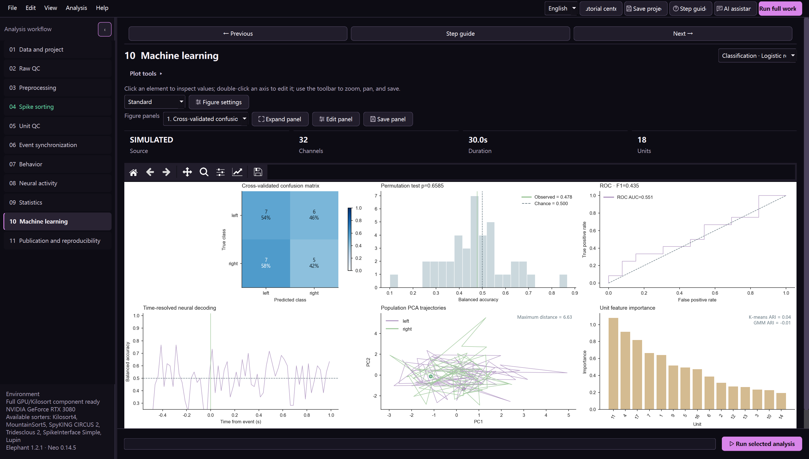
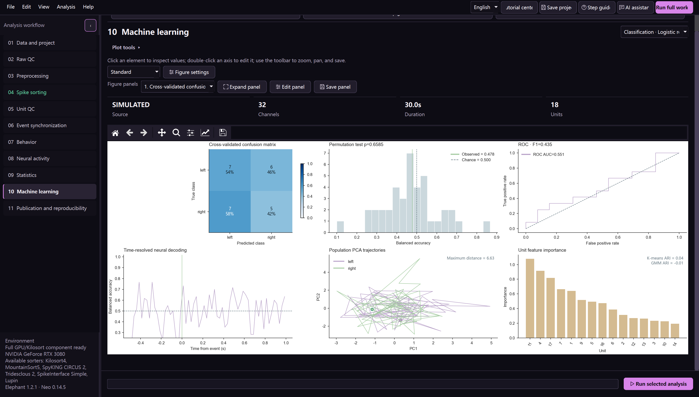

Statistics, machine learning, and scientific limits
Statistical design starts with the biological sampling unit. Spikes, units, sessions, and animals occupy different levels and cannot be treated as independent copies without justification.
Statistical suite
The workbench provides paired and unpaired tests, nonparametric alternatives, bootstrap intervals, permutation tests, effect sizes, multiplicity correction, diagnostics, and mixed-effects support when the project contains the required hierarchy.
Before running a test, define:
the unit of observation;
pairing or repeated measurements;
baseline and response windows;
the family of comparisons;
animal and session identifiers;
exclusions decided before seeing the result.
Report effect sizes and uncertainty with p-values. A non-significant result is reported as such; the software does not convert it into evidence for encoding.
Decoding
Classification and regression operate on trial/event-level features. The output includes cross-validated performance, confusion matrix, ROC/F1 where applicable, label-permutation evidence, time-resolved performance, population trajectories, and feature importance.
Use grouped splitting when samples from the same session or animal could appear in both training and test sets. Fit scaling, feature selection, and dimensional reduction inside each training fold. Inspect class balance and the full null distribution.
Interpreting the figure
The confusion matrix reports counts and row-normalized percentages. The permutation panel marks observed performance and chance level. A high training score without held-out evidence is not shown as a scientific result.
Machine-learning performance establishes predictive information under the specified validation design. Causality, mechanism, and generalization to new animals require additional evidence.

The lower row keeps time-resolved performance, population trajectories, and unit feature importance visible as separate editable panels.
